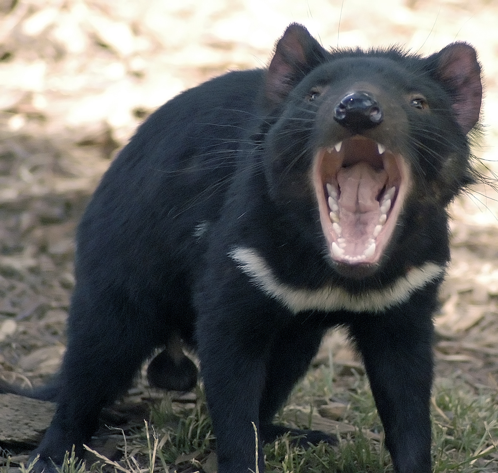
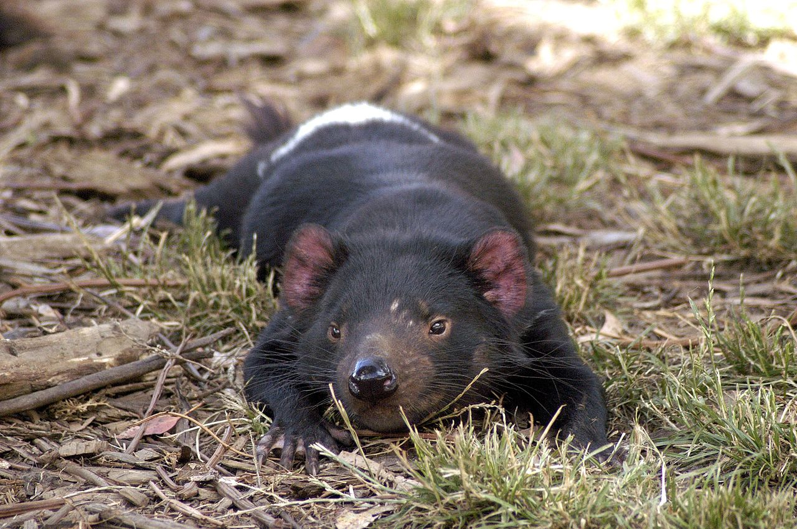

Сумчатый или тасманийский дьявол, или сумчатый чёрт(лат. Sarcophilus harrisii (Boitard, 1841)) — млекопитающее семейства хищных сумчатых; единственный вид рода Sarcophilus. Его чёрная окраска, огромная пасть с острыми зубами, зловещие ночные крики и свирепый нрав дали первым европейским поселенцам основание прозвать этого коренастого хищника «дьяволом». Название рода «Sarcophilus» образовано от слов др.-греч. мясо и др.-греч. люблю («любитель плоти»). 
Тасманийский дьявол — самый крупный из современных сумчатых хищников. Это плотное и приземистое животное размером с небольшую собаку, однако тяжёлым телосложением и тёмной окраской больше напоминающее миниатюрного медведя. Длина его тела 50 до 80 см,размер хвоста — 23 до 30 см. Размеры тела зависят от возраста, местообитания и питания. Самцы крупнее самок. Крупные самцы весят до 12 кг при высоте в холке до 30 см.
Тело у тасманийского дьявола неуклюжее и массивное. Конечности тупые, укороченные; передние лапы чуть длиннее задних, что нехарактерно для сумчатых. Голова непропорционально велика, с притуплённой мордой. Уши небольшие, розовые. Шерсть короткая, чёрного цвета; на груди и на крестце обычны белые полулунные пятна, небольшие круглые пятна бывают и на боках. Хвост короткий и толстый; в нём у тасманийского дьявола откладываются запасы жира, и у больного или голодающего животного хвост становится тонким. Его покрывают длинные волосы, которые часто вытираются, и тогда хвост остаётся почти голым. Первый палец на задних конечностях отсутствует; когти крупные.
Череп массивный с сильнейшими челюстями и острыми, массивными зубами; коренные зубы как у гиены, приспособлены к перекусыванию и дроблению костей. Одним укусом сумчатый дьявол способен прокусить своей добыче позвоночник или череп. Сила укуса сумчатого дьявола, отнесённая к массе тела, — самая высокая среди млекопитающих. Сумка у самок имеет вид подковообразной складки кожи, открывающейся назад; сосков — 4.
В настоящее время сумчатый дьявол водится только на острове Тасмания, хотя раньше он населял материковую Австралию. С материка он исчез примерно 600 лет назад (за 400 лет до появления в Австралии первых европейцев), — предположительно, вытесненный и истреблённый собаками динго, завезёнными аборигенами. В Тасмании европейские поселенцы также безжалостно истребляли сумчатых дьяволов, поскольку те разоряли курятники. В результате по мере освоения острова сумчатый дьявол отступал всё дальше в неосвоенные лесные и горные районы Тасмании, и его численность неуклонно сокращалась, пока в 1941 году охота на него не была официально запрещена. Сейчас тасманийские дьяволы обычны в центральных, северных и западных частях острова на территориях, отведённых под овечьи пастбища, а также в национальных парках Тасмании.
Сумчатые дьяволы встречаются практически в любых ландшафтах, за исключением густонаселённых и обезлесенных районов. Наиболее многочисленны они в прибрежных саваннах и близ пастбищ скота, которые «поставляют» им основную пищу — падаль, а также в сухих склерофилловых и смешанных склерофилло-дождевых лесах. Активно это животное ночью, днём укрывается в густом кустарнике, в щелях среди камней, в пустых норах, под стволами упавших деревьев, где устраивает гнездо из коры, листьев и травы.
Очень прожорливый (его суточная норма пищи равна 15 % от веса тела), сумчатый дьявол питается мелкими и средними млекопитающими и птицами, а также насекомыми, змеями, амфибиями, съедобными корнями и клубнями растений. Часто бродит по берегам водоёмов, находя и поедая лягушек и раков, а на побережье — мелких обитателей моря, выброшенных на берег. Однако большую часть добычи сумчатый дьявол получает в виде падали; используя своё развитое обоняние, он находит и пожирает любые трупы — от рыб до павших овец и коров, причём предпочитает уже разложившееся, тухлое и червивое мясо. Его постоянную добычу составляют мёртвые вомбаты, валлаби, кенгуровые крысы, кролики и др. Возможно, раньше тасманийский дьявол доедал падаль, остававшуюся от трапез тилацина; сейчас он нередко отбивает добычу у сумчатых куниц. Добычу он поедает целиком, вместе со шкурой и костями (кроме самых крупных). Как падальщики и крупные хищники, сумчатые дьяволы играют важную роль в тасманийской экосистеме. В частности, они снижают опасность заражения овец мясными мухами, так как убирают падаль, в которой развиваются личинки. Кроме прожорливости этот зверь отличается неразборчивостью в пище — в его экскрементах находили иглы ехидны, кусочки резины, серебряную фольгу, куски кожаных ботинок и сбруи, посудные полотенца и непереваренные морковки и початки кукурузы.
Дьяволы не территориальны, однако имеют определенные владения, которые обходят по ночам в поисках добычи. Их площадь составляет от 8 до 20 км2, и владения разных животных пересекаются. Тасманийские дьяволы ведут строго одиночный образ жизни; единственная ситуация, когда несколько дьяволов собираются вместе, — это совместное пожирание крупной добычи. Трапеза сопровождается иерархическими стычками и громким шумом, порой слышным за несколько километров.
Сумчатый дьявол издаёт большое количество устрашающих звуков: от монотонного рычания и глухого «покашливания» до жутких пронзительных криков, создавших ему дурную репутацию. Именно ночные устрашающие крики пока ещё неизвестного животного и привели к тому, что первые европейцы дали ему «дьявольское» имя.
Сумчатые дьяволы весьма агрессивны, однако привычка широко раскрывать пасть, как бы в зевке, у них является не способом устрашения и агрессии, а, скорее, признаком неуверенности. Будучи встревоженными, тасманийские дьяволы, подобно скунсам, издают сильный неприятный запах. Несмотря на свирепость, даже взрослые сумчатые дьяволы поддаются приручению, и их можно держать как домашних животных.
Сумчатого дьявола иногда можно встретить днём, когда он принимает солнечные ванны
В спокойном состоянии сумчатый дьявол довольно медлителен и неуклюж, но в экстренных ситуациях переходит на галоп, развивая скорость до 13 км/ч. Молодые животные ловки и подвижны, хорошо лазают по деревьям. Взрослые лазают хуже, однако способны карабкаться по наклонным стволам и залезать на насесты в курятниках. Сумчатые дьяволы неплохо плавают.
Благодаря агрессивному нраву и ночному образу жизни, у взрослого сумчатого дьявола мало природных врагов. Раньше на них охотились сумчатые волки (тилацины) и динго. Молодые сумчатые дьяволы иногда становятся жертвами хищных птиц и тигровых сумчатых куниц (Dasyurus maculatus). Новым врагом и пищевым конкурентом тасманийского дьявола стала обыкновенная лисица, незаконно завезённая в Тасманию в 2001 году.
Познавательное видео и успокаивающая музыка если вы устали
Больше фото вы можете посмотреть здесь
Информация взята с сайтаWikipedia